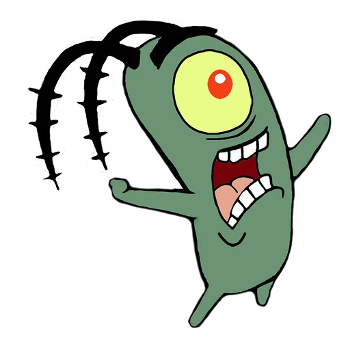

Profile |
About |
Projects |
Contact |
|
 |
I'm Plankton!!Plankton is, as his name suggests, a tiny deep green planktonic copepod who can fit in the palm of one's hand. He has some stubby appendages and one yellow eye with a red pupil and a white (sometimes pink) highlight. He has two long, skinny antennae with four small green spikes sticking out along them. He also has one black thick eyebrow. He has no ears or nose. In some episodes, he is shown without his skin, like in "Plankton's Regular" and "Single Cell Anniversary." His size constantly changes: in some episodes, he's the size of a Krabby Patty, meanwhile, in others, he can perfectly hide in a Krabby Patty. He usually has no fingers or toes, but he can sprout fingers when a scene requires it, similar to Patrick. About me |
|---|
© 2022 Plankton